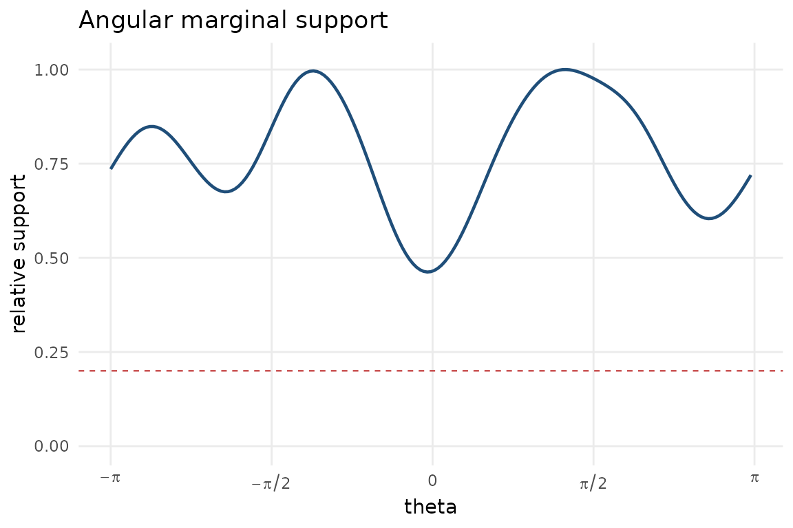

Smoothing and support diagnostics
Source:vignettes/smoothing-support-diagnostics.Rmd
smoothing-support-diagnostics.RmdConditional displays depend on smoothing parameters. This vignette shows how to choose them by cross-validated conditional likelihood and how to flag angular regions with weak marginal support.
library(ggcircular)
cyl <- simulate_cyl_diagnostic(n = 180, scenario = "heteroscedastic", seed = 3)
tor <- simulate_tor_diagnostic(n = 200, scenario = "doubling", seed = 4)For circular-linear data, select both the circular concentration and the linear bandwidth.
cyl_smoothing <- select_cyl_smoothing(
theta = cyl$theta,
x = cyl$x,
kappa_values = c(8, 14),
h_values = c(0.25, 0.45),
n_folds = 3,
seed = 5
)
head(cyl_smoothing)
#> kappa h mean_log_score se_log_score rank
#> 1 8 0.25 -1.023721 0.01705449 1
#> 2 14 0.25 -1.034859 0.01416652 2
#> 3 8 0.45 -1.074550 0.01315483 3
#> 4 14 0.45 -1.074584 0.01017889 4For circular-circular data, select the conditioning and response concentrations.
tor_smoothing <- select_toroidal_smoothing(
theta = tor$theta,
phi = tor$phi,
kappa_theta_values = c(8, 14),
kappa_phi_values = c(8, 14),
n_folds = 3,
seed = 6
)
head(tor_smoothing)
#> kappa_theta kappa_phi mean_log_score se_log_score rank
#> 1 14 14 -0.7018435 0.03067829 1
#> 2 14 8 -0.7301233 0.02242339 2
#> 3 8 14 -0.8707599 0.03264080 3
#> 4 8 8 -0.8856081 0.02394811 4The support diagnostic should be inspected before overinterpreting conditional features in sparsely sampled angular regions.
If R(theta) is the kernel support relative to the
best-supported direction, the local standard error is approximately
inflated by 1 / sqrt(R(theta)) when other ingredients are
fixed. Thus a threshold of 0.25 flags regions with about twice the
best-supported standard error, while the default 0.15 permits an
inflation of about 2.58. Use 0.15 for an exploratory display and 0.25
for a more conservative reading. If the substantive interpretation
changes between these thresholds, report the sensitivity rather than
selecting one value silently.
support <- marginal_support_data(
theta = cyl$theta,
kappa = cyl_smoothing$kappa[1],
relative_threshold = 0.20
)
head(support)
#> theta support relative_support low_support kappa relative_threshold
#> 1 0.01735687 15.50196 0.4666219 FALSE 8 0.2
#> 2 0.05207060 15.69261 0.4723607 FALSE 8 0.2
#> 3 0.08678433 15.95885 0.4803749 FALSE 8 0.2
#> 4 0.12149806 16.29675 0.4905460 FALSE 8 0.2
#> 5 0.15621179 16.70191 0.5027416 FALSE 8 0.2
#> 6 0.19092552 17.16951 0.5168168 FALSE 8 0.2
plot_marginal_support(
theta = cyl$theta,
kappa = cyl_smoothing$kappa[1],
relative_threshold = 0.20
)
support_default <- marginal_support_data(
theta = cyl$theta,
kappa = cyl_smoothing$kappa[1],
relative_threshold = 0.15
)
support_conservative <- marginal_support_data(
theta = cyl$theta,
kappa = cyl_smoothing$kappa[1],
relative_threshold = 0.25
)
c(
default_fraction_flagged = mean(support_default$low_support),
conservative_fraction_flagged = mean(support_conservative$low_support)
)
#> default_fraction_flagged conservative_fraction_flagged
#> 0 0